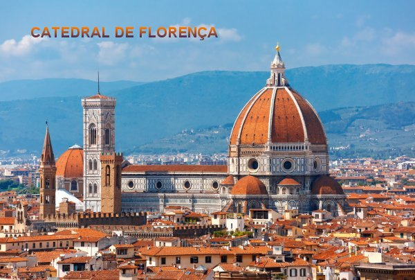

PRELÚDIO
A família e os parentes
de Santa Maria Madalena de Pazzi eram muito influentes na política, não só em
Florença, como também em toda Itália. Os seus ancestrais 
Os Pazzi eram assim, valorosos guerreiros, competentes e fieis. E nesta mesma linha nasceu, cresceu e viveu Santa Maria Madalena de Pazzi. Desde criança recebeu uma atenção especial de NOSSO SENHOR que cravou no seu coração, bases concretas de um baluarte fiel e inexpugnável.
Mesmo com pouca idade, o DIVINO ESPÍRITO SANTO soprava na sua alma, infundindo cada vez mais a força de um caráter maduro e equilibrado, proporcionando-lhe experiências sobrenaturais que encantavam as pessoas e realizavam a fundação do admirável e frutuoso prédio da sua existência.
Ela muito escreveu sobre os ensinamentos DIVINOS que recebeu, enviando cartas às pessoas em locais chaves da administração, inclusive ao Sumo Pontífice, Papa Cisto V, sugerindo e suplicando que ele colocasse em prática o ideal Divino, e desse modo realizasse uma necessária e urgente “Reforma da Igreja”.
No dia 25 de Maio de 2007, comemorou-se 400 anos da sua morte e da sua chegada ao Céu, e nessa oportunidade, nas comemorações realizadas na Basílica de São Pedro no Vaticano, o Papa Bento XVI homenageou dignamente a Santa, recordando um pouco do muito que ela realizou. Disse o Papa Bento XVI:
“Ela continua a ser uma fonte de inspiração espiritual para as Carmelitas de Observância Antiga, que a vêem como uma Irmã que percorreu toda a Via da União Transformadora em DEUS, e que designa MARIA SANTÍSSIMA como a estrela do caminho da perfeição”.
O Papa enfatiza que “para todas as pessoas, esta grande Santa tem o dom de ser amante da espiritualidade, especialmente para os Sacerdotes a quem ela sempre alimentou uma verdadeira paixão”.
O Papa quer “que no Aniversário de seu Nascimento no Céu ajude aumentar a consciência desta figura luminosa que ainda reflete a dignidade e a beleza da vocação cristã, relembrando o seu incessante grito:Vem amar o AMOR!”
"Assim, desde Florença e do seu Seminário, dos Conventos que ela inspirou, a grande mística deve continuar fazendo sua voz ser ouvida em toda a Igreja espalhando a palavra do Amor de DEUS por toda a humanidade."
“Foi vivendo em oração, através da renovação espiritual que ela trabalhou na “Reforma da Igreja” do seu tempo. E para ajudar, Ela deixou diversos escritos que fazem muito bem a vida interior de todos nós”.
Muito mais poderia ser escrito aqui sobre a Santa, sobre os seus ensinamentos, sobre sua espiritualidade, a sequência de êxtases, nos quais ela recebia a palavra e os ensinamentos de DEUS, sobretudo, a preciosa inspiração do ESPÍRITO SANTO.
O APOSTOLADO DOS SAGRADOS CORAÇÕES sensibilizado com a alma de SANTA MARIA MADALENA DE PAZZI, condensou e resumiu a sua maravilhosa obra espiritual, que neste Site, com satisfação nós lhes oferecemos. Desejamos que conhecessem mesmo superficialmente, um pouco da vida dessa admirável Santa no sentido de que possam absorver a grandeza da sua espiritualidade e desfrutem da preciosidade admirável das suas santas virtudes.
“APOSTOLADO DOS SAGRADOS CORAÇÕES”
http://www.apostoladosagradoscoracoes.com/